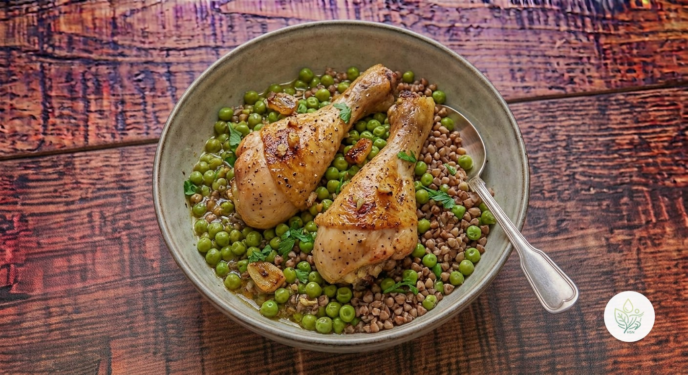

Pollo al Horno con Guisantes y Trigo Sarraceno
BUn plato único de bandeja: muslos de pollo al horno, guisantes salteados y trigo sarraceno, un cereal sin gluten con mucha fibra. Casi 49 g de proteína por ración.
El muslo de pollo aporta más hierro y sabor que la pechuga, y el trigo sarraceno suma fibra y minerales sin gluten: 49 g de proteína y más de 9 g de fibra por ración. La calificamos B y no A porque es un plato calórico (583 kcal por ración) y el muslo con piel eleva algo más la grasa saturada que si fuera pechuga; sigue siendo un plato muy recomendable, pero mejor como plato principal que en raciones extragrandes.
Ingredientes (toca el nombre para ver su ficha)
- 🍗 Muslo de Pollo (con piel) 300 g
- 🟢 Guisantes (cocidos) 200 g
- 🌾 Trigo Sarraceno (cocido) 240 g
- 🫒 AOVE (aceite de oliva virgen extra) 15 g
- 🧄 Ajo 6 g
- 🍋 Limón 20 g
- 🌶️ Pimienta Negra 1 g
Elaboración
- Precalienta el horno a 200 °C. Si no tienes trigo sarraceno cocido, cuece unos 80 g en seco con el doble de agua durante 12-15 minutos y resérvalo.
- Coloca los muslos de pollo en una bandeja con el AOVE, el ajo laminado, el zumo de limón y la pimienta; hornea 35-40 minutos hasta que la piel esté dorada.
- En los últimos 8 minutos, añade los guisantes a la bandeja para que se hagan con el jugo del pollo.
- Sirve el pollo y los guisantes sobre el trigo sarraceno.
Información nutricional (receta completa, 2 raciones)
De las grasas, 11.6 g son saturadas · de los carbohidratos, 14.1 g son azúcares · sodio: 262 mg
Información nutricional (por ración)
De las grasas, 5.8 g son saturadas · de los carbohidratos, 7 g son azúcares · sodio: 131 mg
Preguntas frecuentes
¿Cuántas calorías tiene la receta de Pollo al Horno con Guisantes y Trigo Sarraceno?
Toda la receta de Pollo al Horno con Guisantes y Trigo Sarraceno tiene 1165.6 kcal repartidas en 2 raciones, es decir, unas 582.8 kcal por ración.
¿Puedo usar pechuga en vez de muslo?
Sí, pero reduce el tiempo de horno a unos 20-25 minutos para que no se seque, y ganarás en magro lo que pierdes en jugosidad.
¿Los guisantes pueden ser congelados?
Sí, sin descongelar; añádelos directamente a la bandeja.
¿Con qué sustituyo el trigo sarraceno?
Quinoa o arroz integral funcionan igual de bien, aunque cambiarán algo los valores nutricionales.